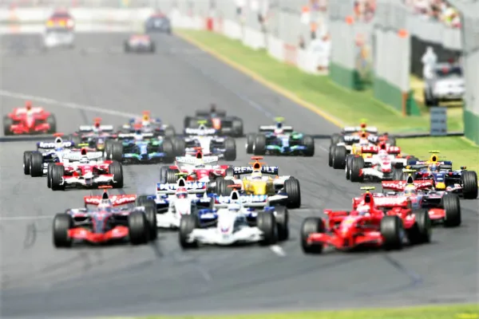

About Formula 1
Formula 1, the pinnacle of motorsport, is renowned for its high-speed races, cutting-edge technology, and global fanbase. Since its inception in 1950, the sport has evolved into a global phenomenon, showcasing the world's best drivers and most advanced racing machines. Each season, teams and drivers compete in Grands Prix around the world for the coveted World Championship titles.
Latest News
Stay up to date with the latest developments in the world of Formula 1. From driver announcements to technological advancements, the sport is constantly evolving. Follow our blog for in-depth analysis and insights into the thrilling world of F1 racing.
Read our latest blog postsUpcoming Races
The Formula 1 calendar is filled with exciting races held at iconic tracks around the globe. From the streets of Monaco to the fast straights of Monza, each race offers a unique challenge to the drivers and teams. Check out the schedule for upcoming races and mark your calendars for the high-speed action.
- Monaco Grand Prix - May 28
- British Grand Prix - July 3
- Italian Grand Prix - September 11
Explore More
Dive deeper into the exhilarating world of Formula 1 racing. Learn about the rich history of the sport, discover the legends who have left an indelible mark on F1, and relive some of the most iconic races in motorsport history.
"formula 1 (titl shift)" by oseillo is licensed under CC BY 2.0.
Understanding F1
- Formula 1
- The highest class of international auto racing for single-seater formula racing cars sanctioned by the FIA.
- World Championship
- The annual competition where drivers and teams compete in a series of races, known as Grands Prix, for the title.
- Podium Finish
- A top-three finish in a race, with first, second, and third place drivers celebrated in a post-race ceremony.